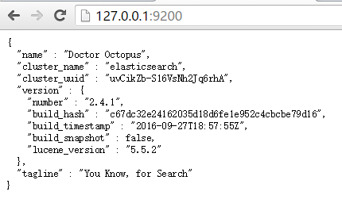
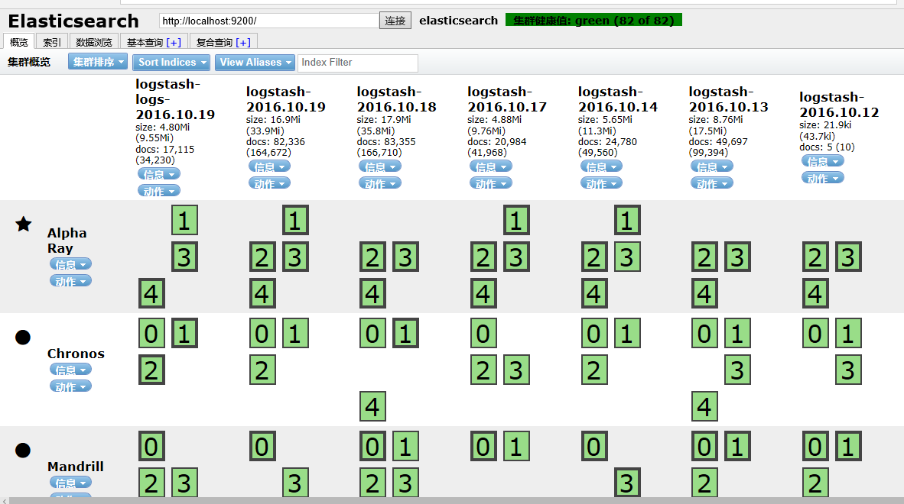
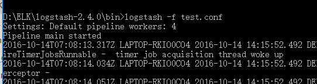
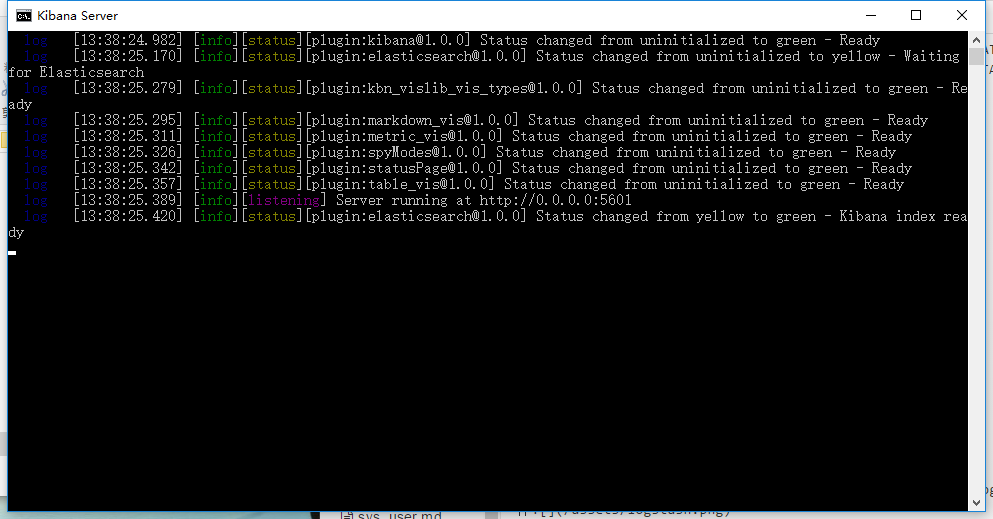
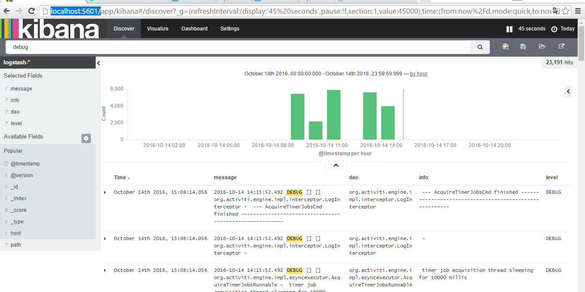

日志管理 ELK（ElasticSearch+Logstash+Kibana)
简介：
ElasticSearch：一个开源分布式搜索引擎，具有分布式，零配置，自动发现，索引自动分片，索引副本机制，restful风格接口，多数据源，自动搜索负载等特点。
Logstash：一个完全开源的工具，可以对你的日志进行搜集,过滤，并将其储存供以后使用。
Kibana：为Logstash和ElasticSearch提供日志分析的友好Web界面，可以汇总，分析和搜索重要的数据日志。
下载说明：
由于Logstash的运行依赖于Java环境， 而Logstash 1.5以上版本不低于java 1.7，因此推荐使用最新版本的Java。因为我们只需要Java的运行环境，所以可以只安装JRE，不过这里我依然使用JDK，请自行搜索安装
ELK下载https://www.elastic.co/downloads/
使用说明：
ElasticSearch：
启动服务：
运行bin/elasticsearch.bat文件开启服务。查看127.0.0.1:9200出现如下页面运行成功

基础操作：es支持restful操作。
获取对应文档:
GET /[_index]/[_type]/_search
上传文档:
PUT /[_index]/[_type]/[_id}
{ "first_name" : "Jane",
"last_name" : "Smith",
"age" : 32,
"about" : "I like to collect rock albums",
"interests": [ "music" ] }
操作文档：http://es.xiaoleilu.com/030_Data/15_Get.html
面向文档：
Elasticsearch是面向文档(document oriented)的，这意味着它可以存储整个对象或文档(document)。然而它不仅仅是存储，还会索引(index)每个文档的内容使之可以被搜索。在Elasticsearch中，你可以对文档（而非成行成列的数据）进行索引、搜索、排序、过滤。这种理解数据的方式与以往完全不同，这也是Elasticsearch能够执行复杂的全文搜索的原因之一。
ELasticsearch使用JSON，作为文档序列化格式。 以下使用JSON文档来表示一个用户对象：
{
"email": "john@smith.com",
"first_name": "John",
"last_name": "Smith",
"info": {
"bio": "Eco-warrior and defender of the weak",
"age": 25,
"interests": [ "dolphins", "whales" ]
},
"join_date": "2014/05/01"
}
在Elasticsearch中，文档归属于一种类型(type),而这些类型存在于索引(index)中，我们可以画一些简单的对比图来类比传统关系型数据库：
Relational DB -> Databases -> Tables -> Rows -> Columns
Elasticsearch -> Indices -> Types -> Documents -> Fields
Elasticsearch集群可以包含多个索引(indices)（数据库），每一个索引可以包含多个类型(types)（表），每一个类型包含多个文档(documents)（行），然后每个文档包含多个字段(Fields)（列）。
elasticsearch 分布式:
Elasticsearch为分布式而生 Elasticsearch致力于隐藏分布式系统的复杂性。以下这些操作都是在底层自动完成的：
*将你的文档分区到不同的容器或者分片(shards)中，它们可以存在于一个或多个节点中。
*将分片均匀的分配到各个节点，对索引和搜索做负载均衡。
*冗余每一个分片，防止硬件故障造成的数据丢失。
*将集群中任意一个节点上的请求路由到相应数据所在的节点。
*无论是增加节点，还是移除节点，分片都可以做到无缝的扩展和迁移
集群部署：
伪分布式环境搭建：创建3个es环境，修改其config/elasticsearch.yml配置文件
1：
cluster.name: elasticsearch
node.name: node1
2：
cluster.name: elasticsearch
node.name: node2
http.port: 9202
3：
cluster.name: elasticsearch
node.name: node3
http.port: 9203
es会自动搜索同一网段下的cluster.name（集群名）相同的es做成集群 将indeces（索引）下的分片（默认一个索引5个主分片每个分片一个复制分片）平分到不同es节点（node）下。
elasticsearch-head插件安装：
是es集群管理插件。执行如下命令安装插件：
elasticsearch/bin/plugin install mobz/elasticsearch-head
打开：http://localhost:9200/_plugin/head/
下图为以上操作建立的集群。 
相关文档：http://es.xiaoleilu.com/020_Distributed_Cluster/05_Empty_cluster.html
Logstash：
运行：
logstash -e input { stdin { } } output { stdout { codec => rubydebug } }
输入报文 helloworld 可以在控制台看到对应报文。
2016-10-20T09:05:53.446Z LAPTOP-RKIO0CO4 hellowrold
通过配置文件运行：
在bin目录下创建配置文件test.conf:
input为logstash配置输入流，logstash支持多种input方式包括file redis TCP UDP syslog lumberjack等。
filter过滤logstash输入流，并可以解析输入流。
ouput为logstash输出流，支持多种输出方式如elsaticearch file email tcp hdfs等，并可以配置相关参数如在es中配置索引名和type名
示例使用file方式获取logstash输入流需将path更改为项目log地址
input {
file{
path => "C:\Users\zjl\.IntelliJIdea2016.2\system\tomcat\Unnamed_hap-parent\logs\hap.log"
start_position =>"beginning"
}
}
filter{
if ([message] =~ "^\s") {
drop {}
}
grok{
match => ["message", " .* %{GREEDYDATA:level} \[%{GREEDYDATA:accountId}\] \[%{GREEDYDATA:requestId}\] %{GREEDYDATA:dao} - %{GREEDYDATA:info}\s"]
}
}
output {
stdout {
}
elasticsearch {
hosts => "localhost:9200"
}
}
若使用tcp为logstash配置输入修改logback.xml文件添加输出方式
<appender name="stash" class="net.logstash.logback.appender.LogstashTcpSocketAppender">
<encoder>
<pattern>%d{yyyy-MM-dd HH:mm:ss.SSS} %-5level [%X{accountId}] [%X{requestId}] %logger - %msg%n</pattern>
</encoder>
<destination>elk-hap:4560</destination></appender>
相关文档：http://kibana.logstash.es/content/logstash/plugins/input/file.html
在Logstash文件/bin目录下打开终端输入logstsh -f test.conf运行logstash解析日志文件
作为一个要长期运行的程序。发行包内都带有sysV或者systemd风格的启动程序配置，你只需要直接使用即可，以RPM为例 /etc/init.d/logstash 脚本中，会加载 /etc/init.d/functions 库文件，利用其中的 daemon 函数，将 logstash 进程作为后台程序运行。所以，你只需把自己写好的配置文件，统一放在 /etc/logstash/conf.d 目录下(注意目录下所有配置文件都应该是 .conf 结尾，且不能有其他文本文件存在。因为 logstash agent 启动的时候是读取全文件夹的)，然后运行 service logstash start 命令即可。

Kibana：
打开文件bin目录下kibana.bat开启服务
浏览器打开localhost:5601查看通过logstash解析的日志文件
config/kibana.yml文件可进行对kibana相关配置
 